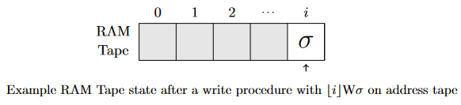
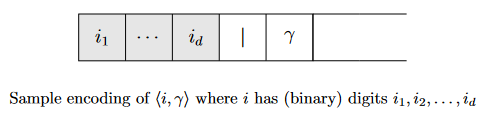

Posted: January 12, 2024.
I've recently begun taking a course in complexity theory. Even though I've studied the topic a little bit in the past, sitting through a formal treatment of the subject has already given me a lot of clarity on little informal notions I had before, such as the general model of Turing machines, and the idea of a universal interpreter. This article intends to recount one of the experiences I had with an exercise from a book, which was slightly modified by my professor and assigned as homework.
In this course, my professor decided to (loosely) reference the book Computational Complexity: A Modern Approach by Arora and Barak. Arora and Barak decide to use multi-tape Turing machines (TM), whereas some other books, such as Sipser's Introduction to the Theory of Computation, use only a single combined input/output/working tape. Interestingly, if \(n\) is the size of our input, it can be shown that any function computable by a multi-tape TM in \(T(n)\) time (for some function \(T\) with certain restrictions) can also be computed by a single-tape TM in \(O(T(n)^2)\) time. The key idea here is we "simulate" multiple tapes by simply condensing the items on each tape into one tape. Each cell is then a pair that first contains a list of all symbols that would've been on the multiple tapes, and then a list indicating whether the head of the "simulated" tape is pointing at it or not. A single iteration of the multi-tape machine can be simulated by sweeping across the entire written portion of our single-tape machine, resulting in \(O(T(n)^2)\) runtime.
That all being said, I hadn't thought much of the assigned exercise when I first glanced at it. It goes roughly like this: say we have a Turing machine with an infinite array \(A\) that can be accessed in constant time. We let one of the working-tapes be denoted as an "address tape," and when we enter the access state, we will have an address written, denoted by \(\lfloor i \rfloor\) as the binary encoding of some non-negative integer \(i\), a symbol R or W (for Read and Write) immediately following, and then some symbol \(\sigma\) if it is a W. If it is an R, we will simply take the symbol at \(A[i]\) and put it to the right of the R, and if it is a W, we take \(\sigma\) and place it at \(A[i]\). Call this a Random-Access-Memory Turing machine (RAM TM). We want to show that any function computable by a RAM TM in time \(T(n)\) can also be computed by a "normal" TM in time \(O(T(n)^3)\).
Using the key idea from the second paragraph, you would see that we might want to show this by constructing a TM that can simulate a RAM access operation. And this is where the trouble begins. My first thought was to simply designate a working tape on a normal TM to be a "RAM tape," as we will use it to simulate our RAM. Non-RAM operations are trivially exactly the same as a normal TM, so we want to focus on the case that we do a RAM operation. One way to do this (also the first way I thought to do it) is to simply directly move to the \(i^{th}\) cell on the RAM tape, and perform the read or write as specified. After all, there can only be at most \(T(n)\) many elements written to RAM in any given execution. So, in the worst case, you would have to sweep over \(O(T(n))\) elements to perform a RAM operation. Thus, the overall runtime is \(O(T(n)^2)\), satisfying the \(O(T(n)^3)\) criteria.

However, I had some doubts. At the end of the problem, my professor had wrote that Arora and Barak's book claimed \(O(T(n)^2)\) was possible, but he wasn't quite convinced. My solution is simple enough that it would've been ridiculous for my professor to not have had the same idea, so I began to question it. Sure enough, after carefully examining my reasoning, I realized the issue with the previous argument.
You see, my analysis (and the accompanying figure) relies on the hidden assumption that the maximum address written is \(T(n)\). \(T(n)\) elements means a highest address of \(T(n)\), right? Well, not quite. There is indeed a restriction on the highest address that can be written, but it's not explicitly written, and it certainly is not \(O(T(n))\). We can write one more bit to the address tape on each iteration. So it's not the value of the address that's bounded by \(T(n)\), but the length of the address (number of digits) that's bounded by \(T(n)\). Recalling that the address is encoded in binary, this leads to a maximum written address that's actually on the order of \(2^{O(T(n))}\). So the resulting analysis is actually \(O(T(n) \cdot 2^{T(n)})\), rather than the quadratic blowup I claimed before.
But not all is lost! It is quite possible to make a minor modification that will still adhere to the \(O(T(n)^3)\) criteria. We can design a RAM simulation procedure that will run in \(O(T(n)^2)\) time rather than \(O(2^{T(n)})\). To achieve this, we must take the idea that there can only be a maximum of \(T(n)\) elements in RAM, and make our RAM tape storage scheme contiguous. This can be easily pulled off by simply throwing in all the RAM elements written right next to each other, but then we lose information about the address each symbol is stored at. Thus, instead of simply encoding the symbol, we can write it as a tuple \((i, \sigma)\) for some \(i \in \mathbb{N}\) and some symbol \(\sigma\). Our encoding scheme may simply start with the address, written in binary, some delimiter, say |, and the symbol itself, resulting in each entry being of the form \([i]|\sigma\). The delimiter prevents certain ambiguous cases, such as \(100101\), which could be interpreted in a variety of ways, such as the tuple \((10010, 1)\), or as two tuples, \((100,1)\) and \((0, 1)\).

The key idea here is that, as we noticed before, the length of each address is bounded by \(O(T(n))\). Thus, the entire length of the elements stored on the tape will be \(O(T(n)) \cdot O(T(n)) = O(T(n)^2)\) cells, securing our belief that we can perform a RAM operation in \(O(T(n)^2)\) time, and resulting in an overall runtime of \(O(T(n)^3)\). I see now why my professor is unconvinced! Maybe \(O(T(n)^2)\) is possible, and if anyone has an idea about that, I would love to hear about it!